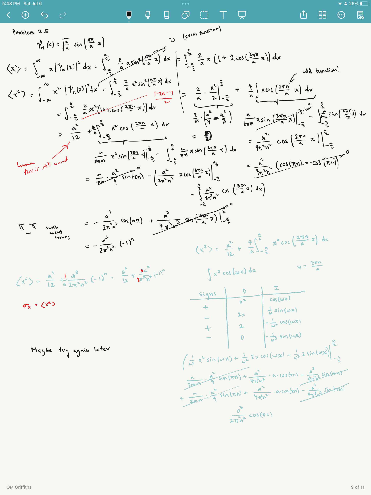

Sketch 10
Particle in a Box and QHO: Solving PDEs with ODEs, Ansatz, and Algebraic Approach
Huh...
I've been rereading some things about the particle in a box and QHO setups, but when I was redoing a lot of these integral computations myself, I keep running into tiny errors that keep me from getting the right answer.
Ideally, I feel that my work should be readable and simple enough that I shouldn't feel like I need a solutions manual to ensure its correctness. That's the main reason I'm making this sketch, to determine if there is some way that I can tabularize my computation, or determine a handful of things to memorize that will make organization and verification much simpler.
Even if I can't figure out a better way to organize my work, the making of this sketch should at least make me redo my computations, and on top of this, I want to do some experiments simulating these PDEs.
Date Started: July 6, 2024
Date Finished: In Progress...
Edit: I may have gotten a bit distracted from the original purpose of this sketch, :-), but I think the sketch is still pretty good!
The Premise
A while ago, I was trying to solve Problem 2.5 in Griffiths's Quantum Mechanics book (essentially about computing a bunch of things for the infinite square well). The problem is, everything got extremely messy, and now I feel like not even returning to the book, because if I go back to the book, I feel like I have to complete Problem 2.5, but looking at my past work for Problem 2.5, it just looks miserable:
To me, my work isn't thaaat messy (ehh, maybe it is). But it gets the wrong answer (I think), and I can't immediately see where I went wrong. Do I want to erase it and start from scratch? Maybe I should just skip this problem? Ugh. There has to be a better way of doing all this computation with a low error rate that doesn't involve plugging everything into a symbolic computation tool.
In any case, writing it up in LaTeX should do the trick, so that's why I'm making this sketch.
1D Particle in a Box
I'll start with the 1D Particle in the Box. The goal? It's in the name: we want to simulate a free particle in a box. To frame this mathematically, we can create a "box" by creating an appropriate potential energy function: $$V(x) = \left\{\begin{array}{cc} 0 & -a \le x \le a, \\ \infty & \text{else.} \end{array}\right.$$ This is a box because particles have finite energy to begin with, so it could not leave the domain $(-a, a)$ else it would have infinite energy.
The quantum mechanics perspective allows us to determine the "trajectory" of the particle via its wave function $\psi : \R \times [0, \infty) \rightarrow \C$, which is a solution to the Schrödinger equation: $$-i\hbar \partial_t \psi = -\frac{\hbar^2}{2m}\partial_{xx} \psi + V\psi$$ Generally, we solve this equation via separation by variables, which gives us so called "separable solutions". These solutions are nice for a few reasons, for which one can check out Griffiths. Most importantly, we can find general solutions by taking linear combinations of these separable solutions. So our aim is to first find the separable solutions.
Separation of Variables
For good measure, let's do the separation of variables. Let $\psi(x,t) = f(x)g(t)$, for $f : \R \rightarrow \C$ and $g : \R \rightarrow \C$. This notation is a bit different than what I've seen elsewhere, but the notation elsewhere that I've seen tends to be very notationally-abusive, so I prefer to just keep the variables $f$ and $g$ even though it isn't canonical. Then $$i\hbar f g' = -\frac{\hbar^2}{2m}f'' g + Vfg$$ To make some progress here, we pray that $\psi \neq 0$ and divide both sides by $fg$. Then $$i\hbar \frac{g'(t)}{g(t)} = -\frac{\hbar^2}{2m}\frac{f''(x)}{f(x)} + V(x)$$ But now notice, the LHS is a function of time, and the RHS of space. Since this holds for all $x$ and $t$, we must have that $$i\hbar \frac{g'(t)}{g(t)} = -\frac{\hbar^2}{2m}\frac{f''(x)}{f(x)} + V(x) = E$$ for some $E \in \C$. Which gives us two "mini-Schrödinger equations": $$i\hbar \partial_t g = Eg$$ $$-\frac{\hbar^2}{2m}\partial_{xx}f = (E-V)f$$ which are affectionately called the time-dependent and time-independent Schrödinger equations respectively (TDSE and TISE). The solution to TDSE can be seen quickly to be: $$g = e^{-\frac{iE}{\hbar}t}$$ so finding these so called "separable solutions" reduces to solving TISE. You may be saying: hold on, what about boundary conditions? Well, in our case, any Dirichlet or Neumann boundary conditions would result in a constant being multiplied out front, so a solution such as $g = Ce^{-\frac{iE}{\hbar}t}$. But we can always push that constant over to $f$, the solution to TISE, so it sufficies to just take $g = e^{-\frac{iE}{\hbar}t}$ here.
TISE for 1D Particle in a Box
We now return to the particle in a box situation. First, we need to find the separable solutions, which from above just means solving TISE. For $x \in [-a,a]$, we know that $V = 0$, so we wish to solve $\partial_{xx}f = -\frac{2mE}{\hbar^2} f$, whose solutions are well known: sinusoids. $$f = A \cos(kx) + B \sin(kx)$$ where $k = \frac{\sqrt{2mE}}{\hbar}$. For $x \not\in [-a,a]$, $V = \infty$, so the only even slightly reasonable solution is where $f = 0$ (technically this is a bit awkward to be multiplying $0$ and $\infty$, but perhaps we could define it in that way in our extended real number line, or instead work with $V$ as a limit of a sequence of functions).
Physically, it makes the most sense if $f$ is reasonably regular, so we enforce that $f$ should be continuous. Then we must have: $$0 = A \cos(-ka) + B \sin(-ka)$$ $$0 = A \cos(ka) + B \sin(ka)$$ so $A\cos (-ka) = 0$ and $B \sin (ka) = 0$. If we further want our solution to be "normalizable" (AKA, we want functions with finite but nonzero $L^2$ norm), we force either $A = 0$ and $ka = n\pi$ for $n \in \Z$ or $B = 0$ and $ka = \frac{(2n-1)\pi}{2}$ for $n \in \Z$. For a given $n$, we may take $k_n$ to be the corresponding value of $k$ as per these relations. In any case, $2k_na = n\pi$ for $n \in \Z$, and for even $n$, we obtain a solution of the form $B \sin (k_nx)$, and for odd $n$, we obtain a solution of the form $A \cos (k_nx)$. Up to sign (which doesn't matter because we normalize anyway), then the solutions become $$f_n(x) = \left\{\begin{array}{cc} C \sin (k_nx + k_na) & x \in [-a,a], \\ 0 & \text{else.}\end{array}\right.$$ (we add in a $k_na$ to turn the cosine into a sine term by shifting). To summarize, our solution to TISE for particle in a box satisfies a few properties:
- It is continuous, but not continuously differentiable.
- It has finite but nonzero $L^2$ norm for $C \neq 0$ (AKA normalizable).
- It has compact support, and $$\text{supp}(f_n) = \{x : V(x) < \infty\}$$ (this is why I made the interval on which $V$ was 0 to be $[-a, a]$ as opposed to $(-a,a)$).
Integration
I thought of a few ways to try and be more organized. I couldn't come up with a good way to tabularize all the computation, but what could be an improvement (while not as spacially efficient as tabularization) is indentation. Here's what it might look like for the computations to find $C$ above:
We would like to know several things about the particle in a box. What are the expectations of the position and momentum? Perhaps, can we compute the acceleration of the particle? Additionally, what are the variances? It would be nice to determine a few moments of the probability distributions for positions, momentums, etc. of these particles so that we can get a good feel for them distributionally.
Each computation comes with its own integral:
- $E[x] = \int_{-\infty}^\infty \psi^* x \psi \; dx$
- $E[p] = m \partial_t (E[x])$
- $\text{Var}[x] = E[x^2] - (E[x])^2 = \int_{-\infty}^\infty \psi^* x^2 \psi \; dx - (E[x])^2$
- $\text{Var}[p] = E[p^2] - (E[p])^2 = \int_{-\infty}^\infty \psi^* (\frac{h}{i} \frac{\partial}{\partial x})^2 \psi \; dx - (E[p])^2$
There are, in particular, three main integrals which need to be computed: $\int_{-\infty}^\infty \psi^* x \psi \; dx$, $\int_{-\infty}^\infty \psi^* x^2 \psi \; dx$, and $\int_{-\infty}^\infty \psi^* (\frac{h}{i} \frac{\partial}{\partial x})^2 \psi \; dx$.
For the first two, we are actually very lucky, because things commute, and for separable solutions $\psi = fg$, we know from above that $gg^* = 1$. The integrals are thus the same as $\int_{-\infty}^\infty f_n^* f_n x \; dx$ and $\int_{-\infty}^\infty f_n^* f_n x^2 \; dx$. Also, it turns out that for our particular problem, we may choose $C$ to be real (in the end it doesn't matter for our general solutions since they will be linear combinations), so that $f_n$ is real-valued, and the integrals become $\int_{-\infty}^\infty f_n^2 x \; dx$ and $\int_{-\infty}^\infty f_n^2 x^2 \; dx$.
Since $f_n^2$ is an even function, $f_n^2x$ is odd, so $\int_{-\infty}^\infty f_n^2 x \; dx = 0$.
On the other hand, $f_n^2 x^2$ is even, so $\int_{-\infty}^\infty f_n^2 x^2 \; dx = 2\int_0^\infty f_n^2x^2\; dx$. Now we have: \begin{align*} \int_0^\infty f_n^2x^2\; dx &= \int_0^a f_n^2 x^2 \; dx \tag{Compact Support}\\ &= \int_0^a C^2 \sin^2(k_nx + k_na) \cdot x^2 \; dx \\ &= C^2 \int_0^a x^2 \sin^2(k_nx + k_na) \; dx\\ &= C^2 \int_0^a x^2 (1-2\cos(2k_nx + 2k_na)) \; dx \tag{Double Angle Formula}\\ &= C^2\int_0^a x^2 \; dx - 2C^2 \int_0^a x^2\cos(2k_nx + 2k_na)\; dx \end{align*} Now the first expression becomes $C^2a^3/3$. As for the second expression, we do integration by parts tabularly.
| Signs | D | I |
|---|---|---|
| + | $x^2$ | $\cos(2k_nx + 2k_na)$ |
| - | $2x$ | $\frac{1}{2k_n}\sin(2k_nx + 2k_na)$ |
| + | $2$ | $-\frac{1}{4k_n^2}\cos(2k_nx + 2k_na)$ |
| - | $0$ | $-\frac{1}{8k_n^3}\sin(2k_nx + 2k_na)$ |
Quantum Harmonic Oscillators (QHO)
The importance of the QHO is that in nature, whenever a system is subject to a conservative force, and is around a stable equilibrium, the fluctuation around that equilibrium is approximately a harmonic oscillator. Mathematically, it is also distinct from our previous example because now $V$ isn't constant with respect to $x$. For a harmonic motion, our angular frequency satisfies $\omega = \sqrt{\frac{k}{m}}$, so $k = m\omega^2$. This means our Shrodinger equation becomes: $$-\frac{\hbar^2}{2m} \frac{d^2\psi_E}{dx^2} + \frac{1}{2}m\omega^2 x^2 \psi_E = E \psi_E$$ Note that this section of this sketch closely follows the methods from two of my Quantum Mechanics professor's lectures.
Analytic Method
First we will use an analytic method, shown by my quantum mechanics professor. There are four steps:
- Introduce dimensionless parameters (we write $x = b\xi$, where $b$ has units of lengths and $\xi$ is a dimensionless parameter).
- Try to guess the ansatz by considering some limits ($\xi \rightarrow \pm \infty$ and $\xi \rightarrow 0$).
- Substitute the ansatz into the TISE and consider the power series.
- Impose boundary condition to find the allowed energy values.
From the first step, our equation becomes: $$-\frac{\hbar^2}{2mb^2} \frac{d^2\psi_E}{d\xi^2} + \frac{1}{2}m\omega^2 b^2\xi^2 \psi_E = E \psi_E$$ which rewriting becomes: $$\frac{d^2\psi_E}{d\xi^2} - \frac{m^2\omega^2b^4}{\hbar^2} \xi^2\psi_E + \frac{2mEb^2}{\hbar^2} \psi_E = 0$$ We now notice that each term should have the same units as $\psi_E$, so the coefficients of the second and third terms should be dimensionless. Thus, we can take $b = \sqrt{\frac{\hbar}{m\omega}}$ which defines a length scale based on the fact that $\frac{m^2\omega^2b^4}{\hbar^2}$ should be dimensionless. Then, $\frac{2mEb^2}{\hbar^2} = \frac{2E}{\hbar \omega}$, which is idneed dimensionless. It is natural here to define $\mathcal{E} = \frac{2E}{\hbar\omega}$. With these definitions, TISE becomes: $$\frac{d^2\psi_E}{d\xi^2} - \xi^2\psi_E + \mathcal{E}\psi_E = 0$$
Now it's time for the second step, guessing an ansatz.
Consider $\xi \rightarrow \infty$, or $\xi >> \mathcal{E}$. Then TISE becomes $\frac{d^2\psi_E}{d\xi^2} - \xi^2\psi_E = 0$. This is sorta like $\frac{d^2\psi_E}{d\xi^2} - k^2\psi_E = 0$, which makes us guess $\psi_E = \xi^m e^{\pm \xi^2/2}$. Then
$$\psi_E' = m\xi^{m-1} e^{\pm \xi^2/2} \pm \xi^{m+1} e^{\pm\xi^2/2}$$
$$\psi_E'' = \xi^{m+2} e^{\pm \xi^2/2} \left[1 \pm (2m+1) \frac{1}{\xi^2} + m(m-1)\frac{1}{\xi^2}\right]$$
Now in the limit, this indeed does satisfy $\frac{d^2\psi_E}{d\xi^2} - \xi^2\psi_E = 0$, so this ansatz works. Since TISE is linear, this would mean $\sum_m A_m \xi^m e^{\pm \xi^2/2}$ is also a solution.
Consider $\xi \rightarrow 0$. This becomes $\frac{d^2\psi}{d\xi^2} + \mathcal{E}\psi_E = 0$. The general solution is then $\psi_E \sim A \sin(\sqrt{\mathcal{E}}\xi)+B\cos(\sqrt{\mathcal{E}}\xi) \approx A\sqrt{\mathcal{E}}\xi + B + \frac{B}{2}\mathcal{E}\xi^2$ via Taylor expansion. Considering our ansatz from the previous limit, it seems that under a taylor expansion, that would still work here! The $\sum_m A_m \xi^m$ part is somewhat like the $A\sqrt{\mathcal{E}}\xi$ term and the exponential term is somewhat like the other term.
Based on these two limits, we guess a form $\psi_E = h(\xi)e^{-\xi^2/2}$ for the solution where $h$ has a power series (we want the minus sign so that $\psi_E$ is finite as $\xi$ blows up). You might be saying: if we were going to use a power series, why do the ansatz step? If that's what you're thinking, please see Appendix A for a more thorough discussion of that.
So far so good, for the third step, we will now substitute the ansatz into the TISE. Notice that $\psi_E' = (h'-\xi h )e^{-\xi^2/2}$ and $\psi_E'' = (h'' - h - \xi h' -\xi(h'-\xi h))e^{-\xi^2/2} = (h'' + (\xi^2-1)h - 2\xi h')e^{-\xi^2/2}$. The Shrodinger equation then becomes $$h'' - 2\xi h' + (\xi^2 - 1 + \mathcal{E} - \xi^2)h = 0$$ Now using that $h$ is analytic, we write $h = \sum_{j=0}^\infty a_j \xi^j$, so $$\sum_{j=0}^\infty a_{j+2} (j+2)(j+1) \xi^j - 2\xi \sum_{j=1}^\infty a_{j} j \xi^{j-1} + (\mathcal{E}-1)\sum_{j=0}^\infty a_j \xi^j = 0$$ $$2a_{j+2} + a_0(\mathcal{E}-1) + \sum_{j=1}^\infty (a_{j+2} (j+2)(j+1) - 2ja_j + (\mathcal{E}-1)a_j) \xi^j = 0$$ From this we get the recursive relation: $$a_{j+2} = \frac{(2j+1-\mathcal{E})}{(j+2)(j+1)} a_j$$ Basically, once we choose $a_0$ and $a_1$, we can find the result. In order for $\psi_E \rightarrow 0$ to go to zero as $|\xi| \rightarrow \infty$, we need the series to terminate at a finite term, so we need $2j + 1 - \mathcal{E} = 0$ for some $j = n$. For a demonstration of this result, see Appendix B. Since $\mathcal{E} = \frac{2E}{\hbar \omega}$, $$\boxed{E = (n+\frac{1}{2})\hbar \omega}$$ which is called energy quantization.
We can only have bound states because $V(x)$ tends to infinity as $|x| \rightarrow \infty$. Since $V(-x) = V(x)$ so $V$ is even, the bound states are either symmetric or antisymmetric. In the symmetric case, we have $a_1 = a_3 = \dots = 0$. Now for each value of $n$, we obtain a polynomial $h$, and $a_0$ is an appropriate normalization factor. Notice that $n = 0$ and $n = 1$ lead to the same polynomial $h$, and similarly with $n = 2k$ and $n = 2k+1$ in general. In the antisymmetric case, we construct $a_3$, $a_5$, and so on from $a_1$. The $h$ polynomials here are called Hermite polynomials. We then get $\psi_n$ for each $n$ being the product of a Hermite polynomial and a Gaussian.
Algebraic Method
Notice that clasically, $H = \frac{p^2}{2m} + \frac{1}{2} m\omega^2x^2 = \frac{1}{2m} (p + im\omega x)(p - im\omega x)$. This motivates trying a similar factorization of the operator in quantum mechanics. We can try to write our Hamiltonian operator in the form: $$\hat{H} \sim \hat a^{\dagger} \hat a$$ (notice that the RHS is always Hermitian for all $\hat a$). We can squint at this and write: $$\hat a \equiv \frac{1}{\sqrt{2m\hbar \omega}} \left(m\omega \hat X + i \hat P\right).$$ The reason for the $\hbar \omega$ in the denominator is because of the "energy scale" (recall the stuff we did before with dimensionless quantiites). $$\hat a^{\dagger} \equiv \frac{1}{\sqrt{2m\hbar \omega}} \left(m\omega \hat X - i \hat P\right).$$ These are called the annihilation and creation operators respectively. You can compute quickly via linearity and basic properties that the commutation relation between them is $[\hat a, \hat a^\dagger] = \mathbb{1}$, the identity! So they don't commute. One can compute fairly easily that: $$\left(\hat a^\dagger \hat a + \frac{1}{2}\right)\hbar \omega = \hat H.$$ from which it becomes not too difficult to compute that $[\hat a, \hat H] = \hbar \omega \hat a$ and $[\hat a^\dagger, \hat H] = ([\hat H, \hat a])^\dagger = (-[\hat a, \hat H])^\dagger = -\hbar\omega \hat a^\dagger$. From this we get two nice results: (assuming they aren't the zero vector) $\hat a |E \rangle$ is an energy eigenstate of energy $E - \hbar \omega$, and $\hat a^\dagger |E\rangle$ is an energy eigenstate of energy $E + \hbar \omega$. First let's examine the usefulness of these results, and then we will prove them later in Appendix C. Once we know these relations, we can define a a ground state $| 0 \rangle$ as an eigenvalue of $\hat a$, and notice that it must have energy $\frac{1}{2} \hbar \omega$. Then repeatedly applying the creation operator gets us more and more states of increasing energies. Let $|n\rangle$ denote $|E_n\rangle$, where $E_n = (n+\frac{1}{2})\hbar \omega$ and $n \ge 0$. Then \begin{align*} |c_n|^2 &= |c_n|^2 \langle n-1 | n-1\rangle \\ &= \langle n | \hat a^\dagger \hat a | n \rangle \\ &= \langle n | (\frac{\hat H}{\hbar \omega} - \frac{1}{2}) | n \rangle \\ &= \langle n | \frac{(n+\frac{1}{2})\hbar\omega}{\hbar\omega} |n \rangle - \frac{1}{2} \\ &= n + \frac{1}{2} - \frac{1}{2}\\ &= n \end{align*} so $|c_n|^2 = n$. In other words, $\hat a |n\rangle = \sqrt{n} \:| n-1\rangle$. Substituting this into $\langle n|\hat a^\dagger \hat a |n \rangle$, we see that $\hat a^\dagger|n\rangle = \sqrt{n+1} \:|n+1\rangle$. Sometimes we define the number operator $\hat N = \hat a^\dagger \hat a$, so that $\hat H = \hbar \omega (\hat N + \frac{1}{2})$. Aside from being mathematically nice, these are very useful operators when solving problems. There are two more important ideas: $$\hat X = \frac{\sqrt{2m\hbar\omega}}{2m\omega}(\hat a^\dagger + \hat a)$$ $$\hat P = \frac{i\sqrt{2m\hbar\omega}}{2}(\hat a^\dagger - \hat a)$$ which allows us to much more easily do computations relating to $\hat X$ and $\hat P$ when working with energy eigenstates.
Now we can actually solve this via an algebraic method. By definition, $\hat a | 0 \rangle = 0$. But this means, by acting by $\langle x |$ on the left, $$\frac{1}{\sqrt{2m\hbar \omega}} \left[m\omega x + i (-i\hbar \frac{d}{dx})\right]\psi_0 = 0$$ Simplifying, this becomes $$m\omega x \psi_0 + \hbar \frac{d\psi_0}{dx} = 0$$ Separating the variables, $$\int -\frac{m\omega x}{\hbar} \; dx = \int\frac{1}{\psi_0}d\psi_0$$ so $\psi_0 = A e^{-m\omega x^2/2\hbar}$. Since $x = b\xi$ with $b =\sqrt{\frac{\hbar}{m\omega}}$, $\psi_0 = Ae^{-\xi^2/2}$. So this is arguably a lot easier than doing all the weird analytic stuff. :-)
Appendix A: What if we skip the ansatz step?
This time, let's entirely skip the ansatz step and try to solve the differential equation by Taylor expanding $\psi_E$.